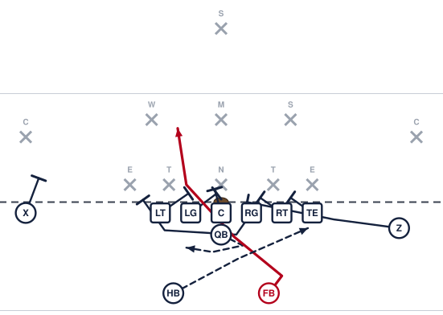

Pro Counter Left

Show them the toss to the tight end side, then hand it the other way to the fullback behind a pulling guard.
Assignments
- X
- Block the defender covering you. He is the one who can make this tackle.
- LT
- Block down on the first defender inside you.
- LG
- Block down on the first defender inside you.
- C
- Block the nose. Do not let him cross your face.
- RG
- PULL LEFT. Stay flat and kick out the first defender outside our tackle.
- RT
- Block back. Take the first defender on or inside you. Nobody crosses your face.
- TE
- Block back and cut off pursuit. You are the last one to the ball.
- Z
- Come across behind the line and cut off anybody chasing from the backside.
- QB
- Fake the toss to the halfback going right, then turn back and hand to the fullback. Sell the fake first.
- FB
- Take one step toward the fake, then plant and run behind the pulling guard.
- HB
- Run the full toss path at full speed with your arms tucked. You are the decoy.
Coaching points
- Run the toss two or three times first. This play only exists because of that one.
- The fullback's first step is toward the fake. If he leans the wrong way early, their linebacker never moves.